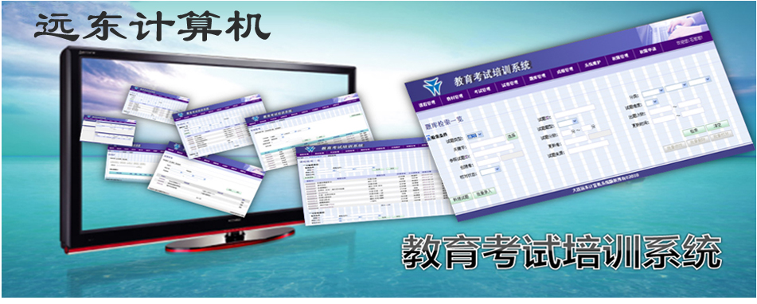

系统概要
教育考试培训系统（简称TT）是为支援社内教育和考试而开发的WEB系统。
☆主要功能
- 在线教材编写及课程开设。
- 在线试题试卷编辑。
- 在线考试计划作成。
- 在线课程学习。
- 在线考试报名。
- 在线参加考试。
- 阅卷和成绩统计。
系统特性
- 在线教育和考试有机结合，学习和检验一体化。
- 单个课程计划可以选择或创建多个教材。
- 可以通过开课/停课，或选择课程针对对象来控制课程的公开方式。
- 提供富文本编辑功能，让内容编辑像写Blog那么简单。
- 支持选择题，判断题和填空题等多种题型。
- 支持自动阅卷(选择题）和人工在线阅卷功能。
- 支持循环考试，固定考试和随时考试等满足多种考试需求。
- 支持断线续答，答卷按个人喜好模式切换，确保用户稳定答题和良好的用户体验。
- 严密而又灵活的权限管理。